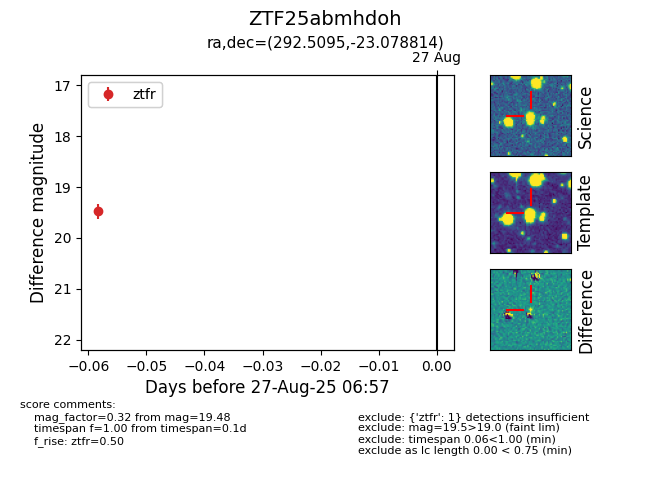

Target ZTF25abmhdoh at 2025-08-27 06:57, see:
FINK: fink-portal.org/ZTF25abmhdoh
Lasair: lasair-ztf.lsst.ac.uk/objects/ZTF25abmhdoh
ALeRCE: alerce.online/object/ZTF25abmhdoh
alt names
ZTF25abmhdoh (ztf,fink)
coordinates:
equatorial (ra, dec) = (292.5095,-23.07881)
galactic (l, b) = (15.8585,-18.42077)
photometry
last ztfr=19.48
1 ztfr detections
